Para Alexandra
♡ Esto es para ti ♡.
Este espacio es para ti
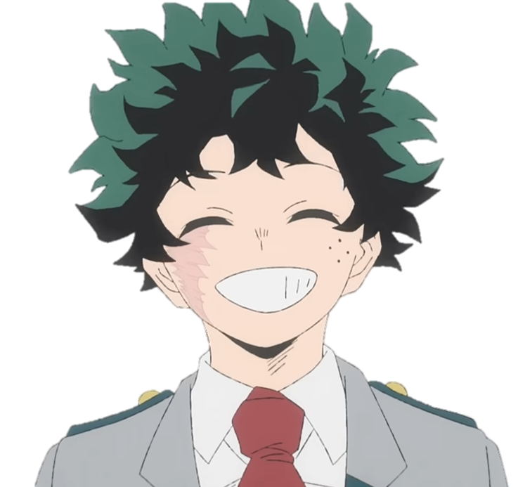
Hola, Ale.
Antes de comenzar, quiero pedirte unos minutos.
Tal vez interpretes esto como mi ultimo intento de ir por tí..., aunque para mi, sí lo es, se que soy necio en esuchar, pero me niego a que termine asi tan facil...
No busco ni puedo cambiar el pasado y mucho menos pedirte una respuesta, se que tomaste ya una decisión pero
lo que su puedo cambiar el futuro y ser mejor para mi, y para tí...
Simplemente quise reunir en un mismo lugar algunos recuerdos, como tu lo hiciste hacia mi, aunque ya no se si tenga
el derecho a verlos..., solo aqui puedo decirte algunas palabras y aprendizajes que significaron mucho para mí y
sobre todo lo que aprendí de tí hacia mi.
Si decides recorrerla, gracias por regalarme un poco de tu tiempo.
Tendras esto para toda la vida y sobre todo cuando quieras verlo, prometo ahora cada 17 intentar poner algo nuevo,
tal vez ya no signifique mucho para tí, pero para mí lo sera todo, intentare poner cosas nuevas, o bien intentar algo diferente...
Y si en algún momento prefieres detenerte, también está bien, tampoco quiero abrumarte ni herirte más, lo hago con amor...
Simplemente solo quiero decirte algunas cosas...
Lo único que deseo es que, por unos minutos,
puedas ver esta historia desde mis ojos.
01-07-2025
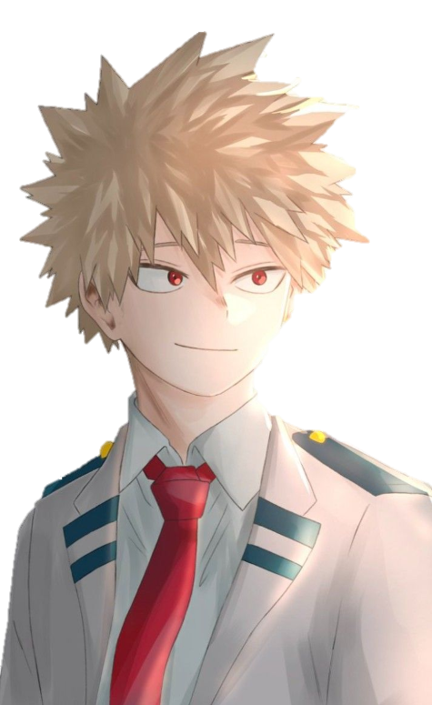
El comienzo
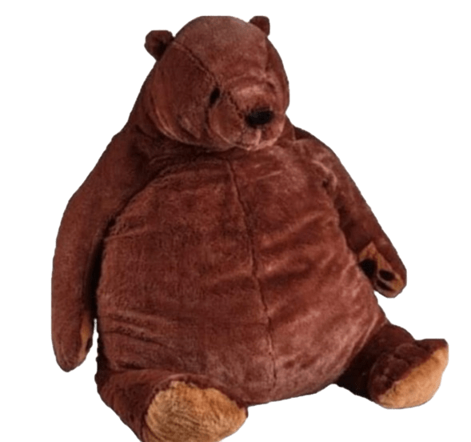
Todo comento ese 01 de Julio de 2025...
Recuerdo con cariño ese día, la verdad estaba algo triste, lo recuerdo cada año, por que siempre me pasa cada Julio...
tal vez ya no importa contarlo, pero me salvaste sabes, sin embargo; cuando te me acercaste, lo cambiaste en un instante y me sentí mucho mejor...
Se que no llegue en el mejor momento a tu vida, aunque bueno, ya habia habido acercamientos, ibamos en las mismas clases, me fuiste interesante,
no me casare de decirlo, me sorprendiste ese dia en ecuaciones diferenciales, la unica que pudo hacer algo diferente, todos confiaban en mi,
pero ajam, llegaste tu y me callaste la boca, me demostraste algo diferente, en confiar en alguien más, y sin pensarlo fuiste tu...
Pasaba el verano del año pasado, eran las vacaciones, momentos en que expereimente algo nuevo contigo, la comunicación con alguien diferente a
mis otros amigos, la verdad, me sorprendio mucho, ya que normalmente solo tengo un amigo y es Miguel, pero fuiste en ese verano mi nueva amiga en
ese ambito, tomabamos charlas que muy pocos hacen, bueno para serte cincero, siempre me sacabas charla desde lo trivial, hasta cosas un poco más
personales, para serte cincero me gustó que lo hicieras, siempre me emocionaba cuando me mandabas un mensaje, se que nunca tuve el valor para hacerlo yo,
lo siento, no es que no quisiera, sino ya sabes, soy demasiado timido, no me busco justificar sino que, no tenia nada que contarte, mi vida era demasiado
palida/ gris, sin embargo cuando hablabamos, la pintabas, le cambiabas el tono y el sentido a las charlas...
Cuando hablabamos siempre me encontrabas jugando videojuegos, sin embargo; los dejaba a un lado y mejor me iba a hablar contigo, volvias esas tardes más
entretenidas, mas dinamicas, con mas sentido a haberlas aprovechado, hasta el punto de desvelarme por primera vez, tal ves lo veas algo inusual en mi, la
verdad, valian la pena, me dormia muy feliz para ser cincero, pensando en la charla que tenia contigo, en conocer algo nuevo de ti y tu de mi, del espacio
en donde trabajaba, las cosas que tenia y de las cosas que haciamos, de nuestro pasado de nuestros origenes...
La verdad, hoy es un cambio muy diferente, me di cuenta que debí aprovechar mucho mas esas charlas contigo, si no fuera por que no se puede cambiar el pasado
regresaria a ese verano magico que vivi, bueno vivimos, se que esta mal que hable por ambos, tu postura cambio en este verano, por culpa de mis acciones,
provoque que olvidaras, bueno sean recuerdos algo desagradables, sin embargo; yo los mantengo vivos y con amor, de esa conexión muy rapida casi en un instante,
se que va a ver algun dia que los olvides o bien sean guardados en un cofre y nunca más olvidarlos, pero te aseguro que yo estare aqui para mantenerlos vivos...
Disculpame Ale, me dueles, me duele en como termina esto, cada noche es un sufrimiento siento una cuchilla atravesando mi alma, un arma que yo solo me coloque,
pero hare hasta donde me lo permitas, arreglando estos errores con acciones, no me pienso rendir tan facilmente, este soy yo, alguien aferrado a que algo
funcione, a pesar de las averías, desordenes que hize, este es el precio que estoy pagando, pero juro, te lo juro por el osito Bimbo, que todo será mejor...
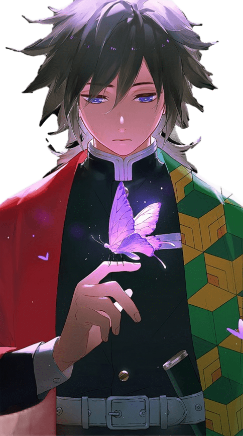
Nuestra historia
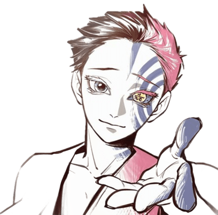
Tal vez es soy algo repetitivo pero una vez una persona me dijo: "Recordar es volver a vivir" y tome la palabra a hacerlo
se que muchas veces repito lo que pasa, lo que vivi, lo que vi, se que nunca tuve muchas cosas que decir, que compartir,
no me justifico en nada, pero siempre vivi desde pequeño en la soledad, siendo esa persona diferente a los demas, me tocó ser
el callado, el timido, el niño miedoso a hacer algo...
Sin embargo, ese 1 de julio del 2025, cambio, fue un momento algo efímero pero se disfruto por ambas partes, me sorprende haber
conocido a una chica que le gustará los mismos animes que a mí, en hablar de cosas triviales en ese momento, creeme me gusto hablarlas
aún las recuerdo como si hubiese sido ayer...
Te conocí en un momento algo pesado, recuerdo que ibas a hacer examenes extraordinarios, de quimica y inusualmente de circuitos, era
la oportunidad perfecta para ayudarte, tener un motivo para acercarme a ti poco a poco, pero en el fondo no tanto asi, sino de corazón
por que quise hacerlo, quise ayudarte, sin embargo, ese día, fuiste la mejor, pasaste dos examenes extraordinarios, me sorprendí mucho
la verdad, me fuiste mas atractiva, me enamoré la verdad...
Cuando iniciamos el tercer semestre, tenia miedo, no de ti, sino de como hacer las cosas, te preguntaras que cosas?, bueno el caerte
bien, la verdad siempre estaba nervioso, el estar junto a la niña que me gusta, en cierta parte trate de sobresalir para que vieras de
lo que soy capaz de hacer, por tí, bueno para nosotros, se que falle muchas veces, te decepcione, sin embargo..., estuviste tú ahi para mí,
me senti cuidado y querido, de que hice un buen intento a lo que me enfrentaba y que lo hice bien, en serio gracias por acompañarme,
aconsejarme, apoyarme, cuidarme...
Con el lapso del tiempo me fui dando cuenta de muchas cosas, de los acercamientos, de las indirectas, de tus sentimientos, de tu naturaleza
de las charlas de los momentos, de lo que somos capaces de hacer, se que me tarde, ese dia tuve que decirte lo mismo: "TU TAMBIEN ME GUSTAS",
pero mi corazón entro en un estado de nerviosismo puro, me sentí muy emocionado de coincidir contigo, solo que en ese momento llego Gabriel y
en cierto punto arruino el momento, pero te segui hasta el baño y te espere, no supe bien que decirte, solo queria abrazarte queria quedarme
contigo, me sentí orgulloso, me sentí amado por primera vez en mucho tiempo...
Quiero quedarme contigo Ale, por favor..., no puedo y no se como seguir mi vida sin tí, no podria hacerlo bien, siento un vacio eterno con
este distanciamiento, me encariñe mucho contigo al grado de poder llamarte familia a una etapa temprana, lo digo en serio, tal vez no te agrade
la idea pero tengo un sueño contigo hacer un legado, me diste una razón para levantarme, seguir adelante, te esperaré esta vida y mil otras
para estar con mi amada, de la mujer que me enamora cada día, se que hoy estamos lejos pero no me rendiré, te seguiré el paso, seguire buscandote
asi tenga que ir todos los dias a tu casa y hablarte, tal vez suene mal, pero no puedo vivir sin tí, no es acoso ni nada de eso, mis pies se
mueven por si solos, y hacia tí, lo mismo que mis sentimientos me gritan en mi cabeza y en mis oidos que vaya hacia tí, por que te quiero y me
dolera dejarte ir, sentiré un vacio muy profundo que nadie pueda llenar...
Te extraño mucho...
♡ Te extraño Ale ♡
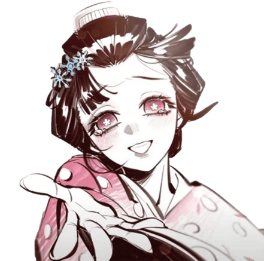
Nosotros (He and She)
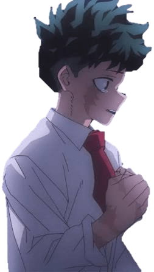
Sin pensar que ese 17 de marzo, sería un dia espctacular, un dia magico, una noche de neón, llegue algo serio ese día, algo distraido, muy callado
no se si recuerdes, un dia antes, cambiaron los roles, yo te pregunte todo, la verdad pense que te abrume..., bueno eran preguntas basicas, de tu estar,
de tu descansar, de tu bienestar, la verdad, era para no dejar morir el día, los sabados, como los domingos se volvieron dias algo inertes para nosotros...
Fue un dia algo largo pero valio totalmente la pena, ya no teniamos nada que hacer, no habia clases, solo pasar el rato, jugando ajedrez, matando el tiempo,
se que siempre hacia que los dias fueran algo aburridos, por no charlar, no sacar un tema de conversación, me eh portado muy mal, fui una mala persona, desde ese día
mis dias cambiaron, una nueva responsabilidad, un camino que sabiamos que seria complicado, sería algo dificil de cruzar, sin embargo, me arme de valor de tomar
tu cintura, tomar tu mano, tomar tus labios y besarlos... ><
Tu sonrisa tan resplandeciente, dejó a mi corazón encantado, en el instante que te volvi a encontrar, mi mente trajo aquel hermoso, que de niño nunca creí imaginar,
me pregunto, si aun quisieras seguir bailando conmigo, si me das tu mano, te llevare, con un camino cubierto de luz y oscuridad, se que hoy sigues pensando en esa
version horrenda de mí, no puedo saberlo pero lo entiendo, que amor necesitas tú, y el valor para pelear en mi lo encontraras, mi corazón vibro, en ese momento
cuando nuestro labios chocaron, tu tan nerviosa y yo también, aunque no lo notaras, lo tome con mucho amor, pero disfrutando el momento...
Quisiera parar el tiempo, y volver a ese día, ese día magico, para ver nuevamente ese destino que siempre imagino junto a tí, tantas cosas que quiero decirte, se quedan
hoy en silencio, no puedo encontrar el momento, el ruido de la ciudad, no me permite llegar hoy a tu corazón, y aunque aveces trate de ocultar lo que sentía, siempre
ocupabas tu mi pensamiento, ya no puedo finjir, lo que mi corazón siente por tí, ven dame y toma y tu mano, para huir de esta terrible oscuridad...
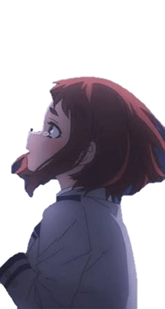
Momentos inolvidables
Cada foto, cada recuerdo, lo atesoro con mucho amor y cariño.
Tal vez nos faltó llenar muchos espacios, pero estas imágenes
conservan una parte de lo que vivimos.
¿Por que no lo seguimos llenando?
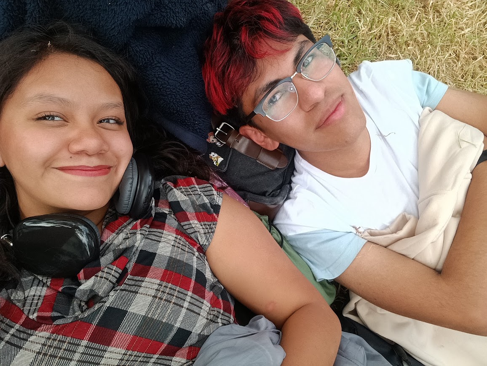
💖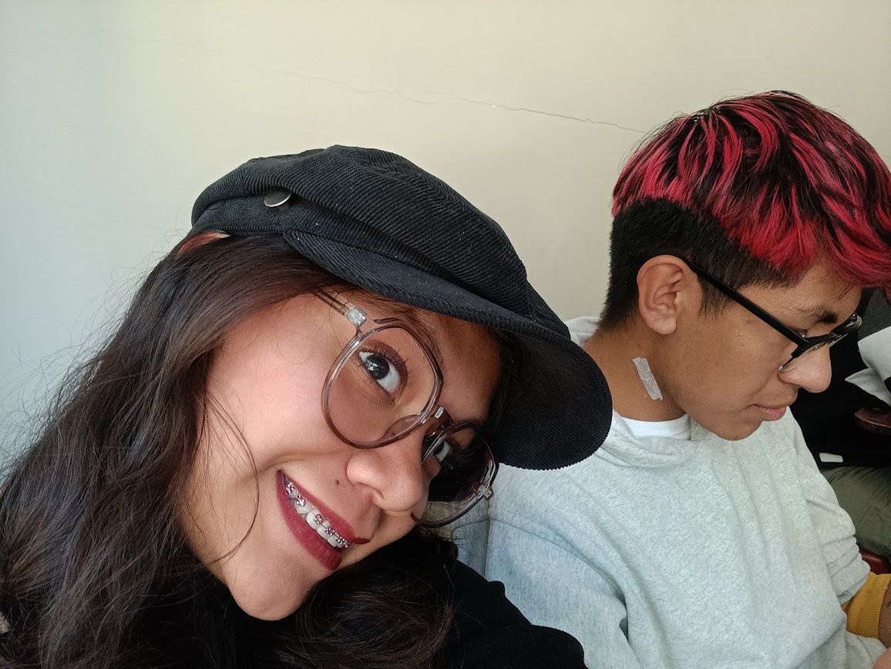
💖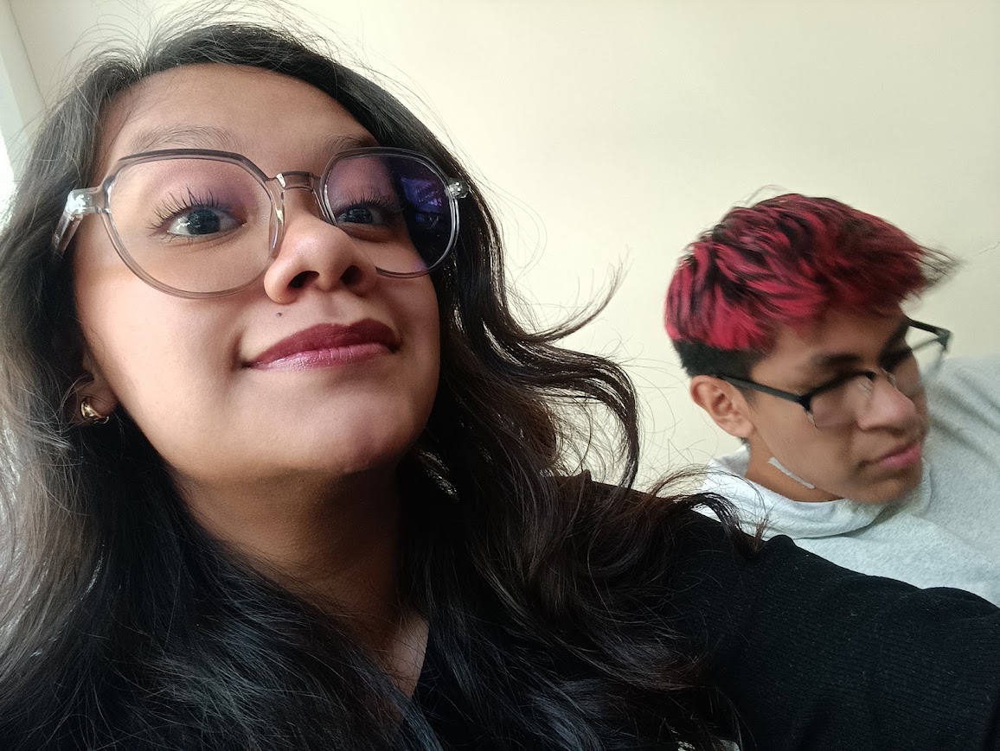
💖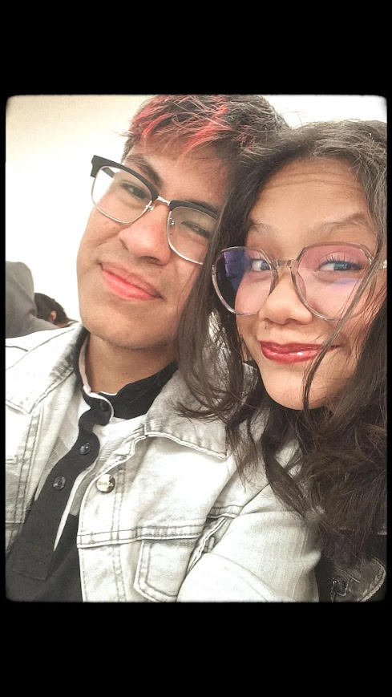
💖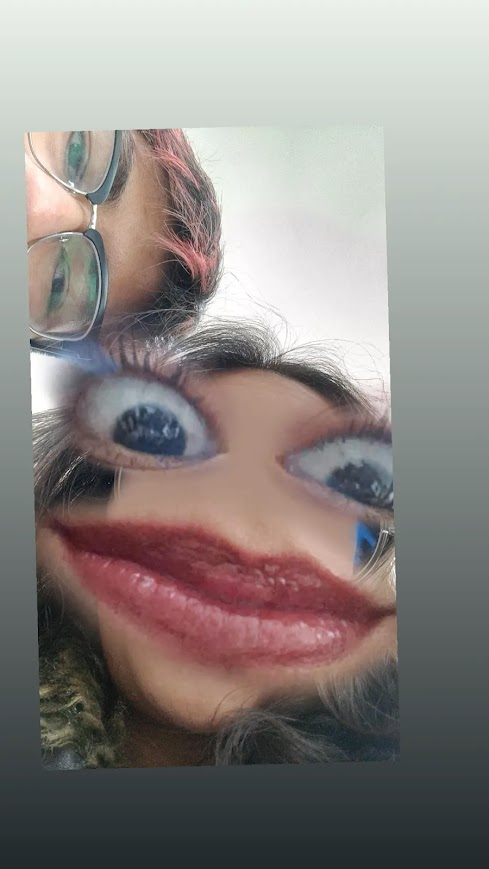
💖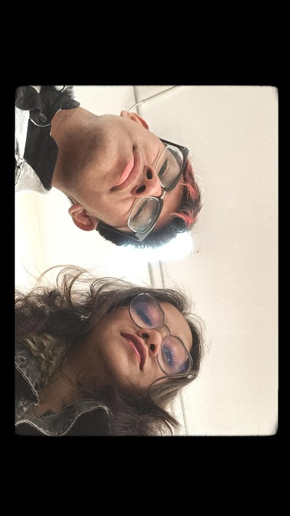
💖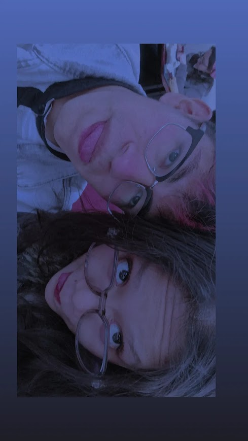
💖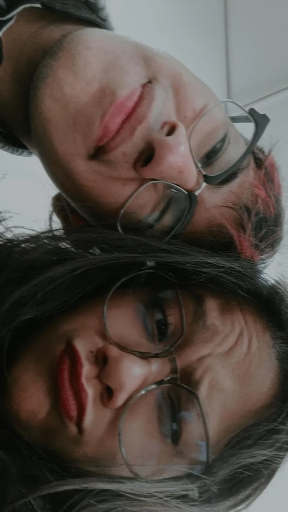
💖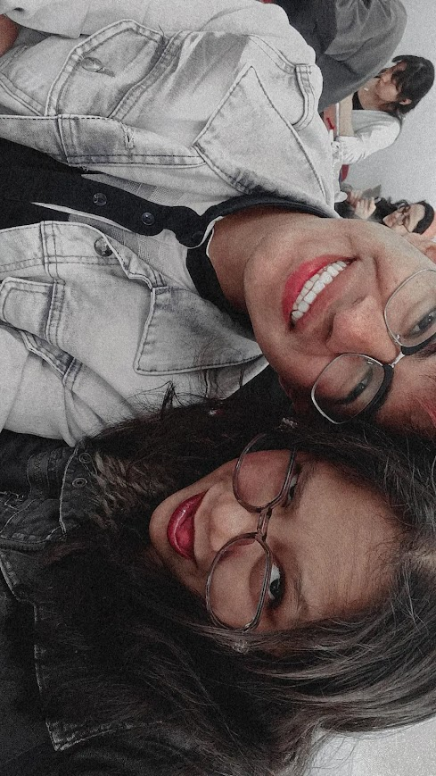
💖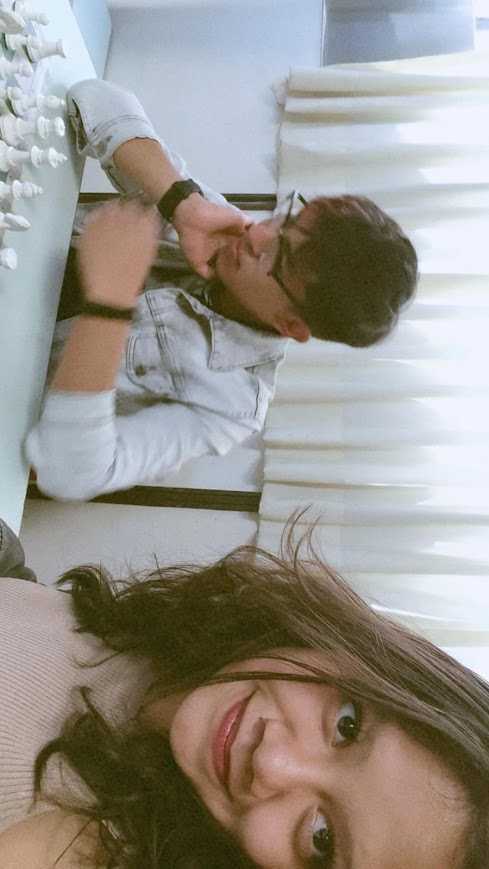
💖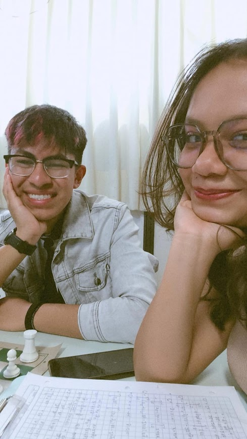
💖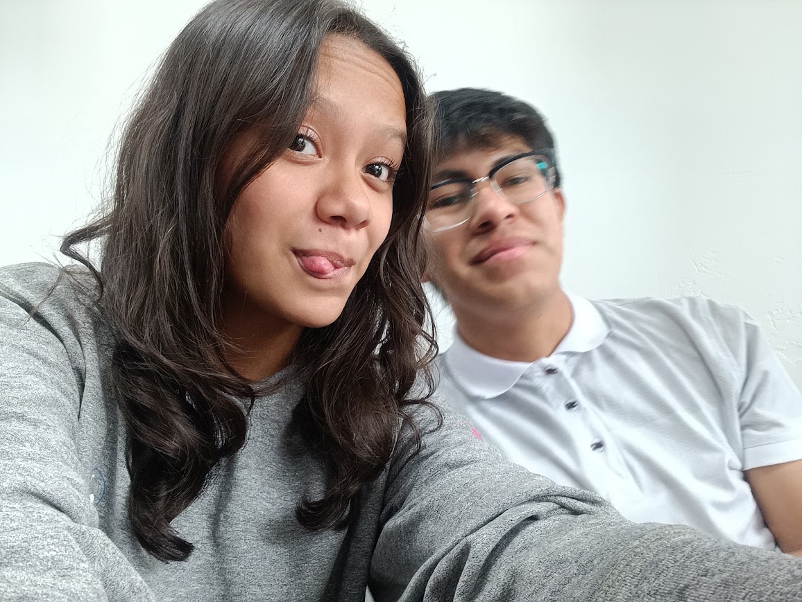
💖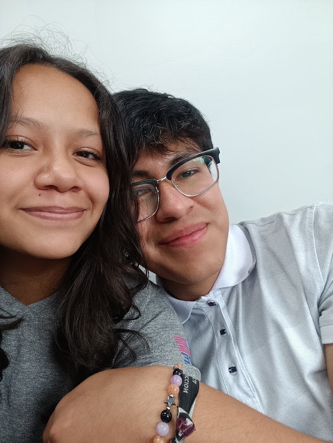
💖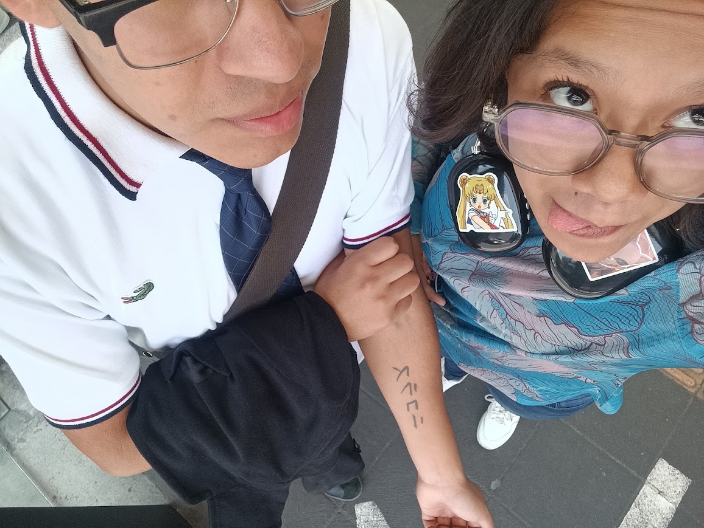
💖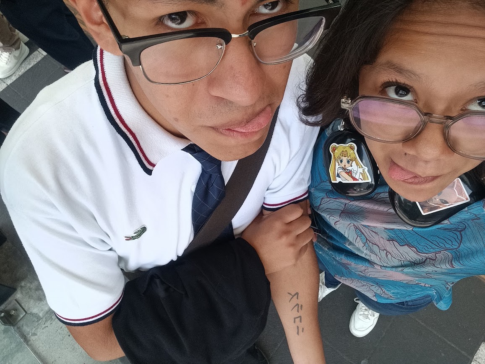
💖Las pequeñas cosas
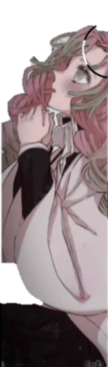
Que puedo decir Ale, sinceramente no hay palabras para describir lo lindo que fuimos ame todo esto que compartimos, al principio
era demasiado callado, timido, tu al contrario siempre nos ponias temas un tanto no relevantes para otras personas pero para nosotros
lo eran todo, somos dos raritos que coinciden con cosas inusuales, sin embargo; son las mejores que podemos compartir, esas pequeñas
bromas que empezaba a hacer cuando empezé a tomar confianza, como lo de; !Mira, mi dedo!, siempre caen en esa broma, o en mis frases
tal vez algo tontas, bodrias, sin humor en algunas veces...
Los apodos que empezamos a tener, recuerdo que me llamabas Tesla, al final entendi por que..., lo amé de verdad, nunca te lo dije
pero en mi cabeza o cuando me ponia a pensar en tí en todo noviembre, diciembre y cuando regresamos del paro, siempre te llamabá
"ales", algo tal vez raro, pero me gusta llamarte así, seguire aciendolo para no olvidarte mi ales...
Amo tu forma de reir cuando te conocí, es la sonrisa mas natural que puedo ver, cuando estabas triste, cuando querias llorar, cuando pensabas, cuando sobrepensabas,
cuando imaginabas cosas lindas, es tu matiz, es tu naturaleza, tu forma unica de ser Alexandra, cada cosa que veias, tambien lo
veia yo, me gusta tu forma en como piensas las cosas, las conversaciones, es muy natural,, te cuidare de mejor forma, pero creo esta vez me toca de lejitos,
sin emabargo; disfrute cada momento en los cuales cuando estabamos solos, con amigos, reimos juntos, lloramos juntos, luchamos juntos...
Las costumbres nunca se olvidaran, se volvieron mi día a día, el desayunasr juntos, en el como me educaste, me ayudaste, me enseñaste,
me orientaste, se volvieron rutinas de mi día a día, se que hoy estas enojada, pero muy enojada y lo entiendo, respeto tu desición,
aunque me duela, aunque me niegue, aunque no acepte ahora las seguire haciendo con mucha mas fuerza, por que todo fue bueno,
no me debes nada, yo te debo la vida, con tenerte lo tengo todo...
Te debo muchas explicaciones, pero trataré de explicarlas poco a poco, tal vez de forma diferente, pero lo haré, no tengo la certeza de que
lo leas o quieras leerlo, pero lo hare por que me nace, tal vez en este espacio, o te llevaré una carta, si es que aun puedo y me permites
hacerlo...
Te quiero Ale...
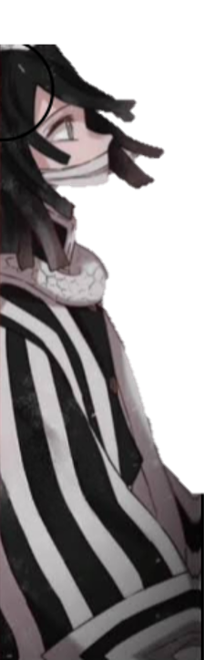
Lo que siempre admiré de ti
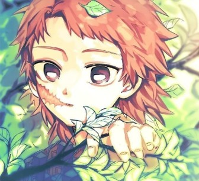
Admiro muchas cosas de tí Ale, eres una mujer aguerrida, fuerte, solidaria, hermosa, hubo una vez que me preguntaste:
¿Que es lo que te gusta fisicamente de una niña?
Ahora puedo responder con mas seguridad...
Su sonrisa, que a pesar de los malos tiempos siempre tenga una linda sonrisa, que se acepte como es, que no vea el fisico como
un impedimento de menospreciarse o hacerse menos, que compita, que tenga esa iniciativa, que sea el ejemplo de los demás, que a pesar
de que piense que no pueda, lo intente, sus valores, y todo esto Ale..., lo veo en tí, tal vez es repetitivo esto, pero ese día en
ecuaciones diferenciales, me atrapaste en tu valentía, sabiendo que posiblemente estabas mal, lo intentaste y me diste una gran lección
de vida, no cabe duda que el mundo es pequeño, hoy, si hoy me lo demostraste, demostraste esa tenacidad, ese orgullo de guerrera
de una profesionista con valentía...
Sinceramente no creí ver a alguien como tú, con un sueño noble, de gentileza, de ambición, de proposito, tu forma de ver las cosas,
de interpretarlas, tu ezfuerzo de estar hasta hoy aqui, ese liderazgo, curiosidad...
Al final terminaste enseñandome tu a mí, terminaste de ser mi guía, mi luz, mi camino, mi dirección, me educaste, me regañaste,
y todo eso lo entendí, puede que algunas cosas tarde pero siempre tuviste esa iniciativa, para ser cincero a veces me daba envidia
que lograras más que yo, pero me alegro, por que viene de tu corazón, de tu forma de ser Alexandra...
Al final, termine reprobando tu clase, me quede corto, me atrase, me distraje por culpa de mis acciones, pero ya aprendí, si en algun
futuro hay un extraordinario, te lo juro, que lo pasaré, gracias a tí, para intentar estar contigo, suena dificil, pero, me
arriesgare, por que asi es Nico, es aguerrido igual que tú, tal vez no a tu paso pero si con la misma determinación y ambición que
la tuya.
Te amo Alexandra..., GRACIAS :^
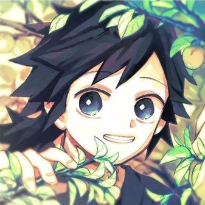
Lo que aprendí y me disculpo
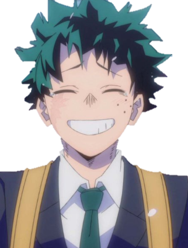
Me lleve muchas experiencias nuevas contigo Ale, llegue a experimentar nuevas cosas, desde sentimientos, afecto, saber escuchar,
paciencia, de hablar las cosas a tiempo, de entender a como ser mejor persona, y como tratar a los demas, se que son cosas basicas
de nuestro crecimiento pero, tu me ayudaste a entenderlas mejor.
Sí los dos nos equivocamos, cometimos errores, no hablamos las cosas en su momento y a tiempo, cometimos errores que nos van a ayudar
en el futuro a ser mejores con los demas, puede que ahora con caminos diferentes pero con un mimso objetivo, te llevaré siempre en el
alma Ale, tenlo por seguro, lo dije en un espacio lejos de aquí eres un tatuaje sin tinta que no podre borrar...
Creo pedirte una nueva oportunidad ya es algo complicado, algo imposible, siendo cincero, me gustas Ale, y mucho pero no puedo forzarte, creeme
si hubiera algo que tu me pidieras lo haría, no sabes las ganas que tengo de abrazarte y pedirte perdón definitivamente pero ya no
me quieres ver y ya no me necesitas ver y me duele con toda el alma..., te eh estado persiguiendo desde ese 13 de noviembre del 2025,
pero ya no te alcanzé, perdí tu marca, perdí tu paso, me tarde en buscarte, me tarde en escucharte y nuestro regreso al principio no
fue lo esperado, cambio algo muy importante cuando regresamos del paro de la escuela, en nuestra conexión emocional se quebro algo,
dejamos romper algo importante que dejamos morir, rompimos muchas promesas, principalmente yo, nos olvidamos mutuamente, de quienes
eramos, de los momentos que hasta ese entonces empezamos a forjar...
Este es mi ultimo intento para salvar nuestra conexión, tal vez suena mal en como lo digo pero es mi forma de hacerlo, aunque tengo
la idea de cual sera la respuesta, sin embargo la haré, por que Nico es asi, aguerrido, tenza, necio, pero en el sentido de intenarlo,
se que morire, pero morire en el intento intentando recuperarte, se que tengo que hacerlo fisicamente pero, no quiero incomodarte ni
presionarte, si se llegara a dar el caso, te lo preguntare nuevamente, cuando leas esto, bueno si es que lo llegas a leer, tal vez
ya no esté, me habré ido de tí, quisisera darte minimo un abrazo final, Pero ya no tengo derecho a hacerlo, sin embargo me
muero de ganas por hacerlo...
Mis sentimientos hacia ti son honestos, sinceros y puros, te seguire esperando asi sea toda la vida, tal vez exagero, puede que
conozcas a alguien más, y seas mas feliz y si lo eres, yo tambien lo estaré, por que es una de mis tantos sueños, que tu seas feliz
conmigo o sin mí, sabiendo que algun dia morire, me ire traqnuilo que fuiste feliz a mi lado o sin mi que te des una nueva oportunidad
pero aun asi, te llevaré en mi corazón, en mis sueños continuaré el camino que no pudimos conlcuir y ahí te seguire el paso,
no te soltare ya no, por que ya estoy aqui, disculpa mi tardanza...
En nuestra última conversación me dejé llevar por mis emociones. Me exalté, dije cosas que no debí decir y terminé actuando
de una manera que no refleja la persona que quiero ser. No quiero justificarme diciendo que estaba triste o desesperado.
Lo estaba, pero eso no convierte mis palabras en correctas. Tú no merecías cargar con esa reacción. Lo siento de verdad. También
quiero pedirte perdón por todas las veces en las que mis decisiones, mis actitudes o mis errores terminaron lastimándote. Sé que
hubo heridas que no pude reparar y entiendo que un "perdón" no las borra...
Se que son cosas que te tengo que decir fisicamente pero ya no puedo acercarme a tí, no quiero hacer sentirte mal ni incomoda como
la de aquel sabado, sin pensar que era el ultimo día que te veria...
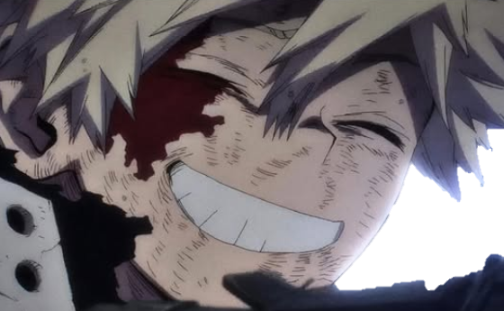
Gracias
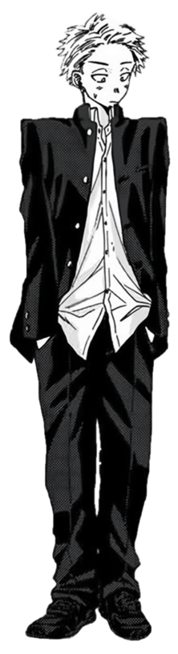
Bueno creo ya casi es el final, bueno casi el final, dicen "que cuando dos almas gemelas estan destinadas a estar juntos se separan es
para volver mejores y mas fuertes que antes", para ser sincero, si nos paso, pero no se si haya una segunda vez..., sigo pensando que si,
ambos nos equivocamos, aceptamos tomar riesgos y equivocarnos en el proceso, prometimos caminar juntos y si uno caía el otro le apoyaría
y viceversa, pero creo esta vez ambos caiamos, pero independiente de esto, es quien esta dispuesto a estar con alguien a pesar de como es
y tu lo fuiste y yo; también, se que no como esperabas, pero ponia mi granito de arena para acompañarte...
Nunca me aburrí de ti Ale, jamas, si con solo recibir un mensaje tuyo me pongo feliz, independiente de como estamos ahora, creeme que
lo estaré pero creo debe ser al revez, el estar buscandote, pero no te dire: "respeto tu decision" la verdad te dire que no me quiero ir
me quiero quedar contigo toda la vida, pero tampoco te puedo obligar a esto, es algo que tu decidiras bien, cuando leas esto, o bueno
si es que llegas a leerlo y verlo, por que lo hago con amor, el mismo que recibí de ti...
Se que ya no te quieres sentir así, como te hice sentir esas veces en las que me alejaba y te dañaba, simplemente creía que yo podía con todo
me quebraba si, y ese mimso quebramiento tambien te quebraba a tí, te alejaba de mí, esas desapariciones, esas actitudes, esas formas de alejarme
momentaneamente, me lastimaba mas yo de lo de yo a tí, no me justifico ni nada, pero sabes..., siempre busque y buscaré la forma de sanarte,
tal vez ya es tarde pero quiero ser tu remedio, tu motivacion, se que ya es algo tarde pero, lo entendí..., sabes que siempre estaré
para ti, amigos o no, conocidos o no, enojados o no, distanciados o no, bloqueados o no...
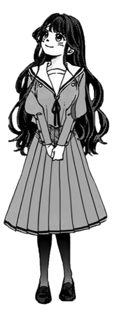
¿El final?

La mayor duda que eh tenido estos dias es, me quedo y sigo luchando por tí o me alejo y te dejo en paz, me niego a dejarte, no lo acepto,
no podre olvidarte ni puedo hacerlo, no por obligación, mis sentimientos gritan por tí, eres especial...
Dicen que cuando amas algo, no lo dañas, lo cuidas, lo protejes, buscas la forma de mejorarlo, pulirlo, y sobre todo de corazón, se que
te dañe muchas veces, se que es repetitivo lo que digo, no es que deje de amarte, solo que no actue corectamente en el momento, desde las
fotos, mi enfermedad en octubre y despues desapareci por dos semanas, mi regreso creo no fue lo mejor, sentía que ter perdía, llego noviembre
y ocurrieron muchas cosas malas, Sebastian, el chico que te hostigo, llego el 13 de noviembre y dijimos adios, desde ese día te perdi...
Llego diciembre, era una soledad eterna sin tí, tu intentabas, no..., ambos intentabamos buscarnos, pero llegue un poco tarde;
llego el 7 de diciembre, yo ignore todo, la verdad, desde hace 14 años que no celebro mi cumpleaños, puede que te parezca mentira,
pero es la verdad siempre pasaba algo ese día, y el año pasado no fue la excepción..., siempre se olvidan de mi cumpleaños,
estoy en cierta parte maldito, pero llegaste tú Ale, la mas importante, la primera en decir "Feliz cumpleaños",
junto a Miguel, Donkan, Gabriel, Diego, Cris, Edwin, Jessica, Carol y solo ellos, me recordaron lo importante que soy para ustedes...
Se que ya no habra un cambio de opinión, se que elegiste este camino, que no te puedo forzar, no te puedo decir vuelve por favor, me muero
por tenerte una vez mas entre mis brazos, y si lo hago lo haria para no soltarte, tu te ves más guapa bailando y yo callado, siempre fue así
entre los dos, te amo Ale, me agradaste desde la primera vez que te conocí, esa valentia, esa perseverancia, esa iniciativa, ese orgullo que
cargas como mujer, una mujer aguerrida, nunca te olvidare...
Este puede que sea el último capítulo. Un lugar para despedirme con tranquilidad, si llegas a esta parte, es por que se tomó
una decisión, te extrañaré y lo sigo haciendo, te amaré y lo sigo haciendo, tal vez ya no espere nada a cambio ni pueda cambiar algo,
aunque no me rindo, ni me rendiré, morire hasta el final para re-conquistar ese corazón nuevamente, tal vez en esta linea temporal o tal
vez en otra linea temporal o mis sueños simplemente dejando aquí una parte de nuestra historia...
Si nos volvemos a ver, será por que me habre aceptado, habre cambiado, seré una mejor persona, tal vez contigo si el destinos nos lo permite
y si aceptas volver a tomar tu mano, continuar este camino que hoy dejamos inconcluso o puede que dado por conluido, te estaré esperando Ale,
asi tengan que pasar decadas, o años, suena loco, pero para mí, solo se enamora una vez, y eres mi unica vez, sera complicado si me vuelvo a
enamorar, en está y en mil vidas te volveré a elegir, te cuidare mejor, sere mejor hombre contigo...
Cuidate mucho Ale, te amo...
Siempre recordaré con cariño todo lo que vivimos.
Te deseo una vida llena de felicidad, paz y muchos sueños cumplidos.
Te seguiré esperando aunque tal vez sea para toda la vida :^
♡ Te quiero mucho Ale ♡
Siempre seras mi ingeniera fvorita, simplemente la mejor de todas...
Prometo ir a buscarte cuando sea el momento y si tu aceptas claro...
Sere tu astronomo, recorriendo cada galaxia con el fin de estar contigo...
Te prometo que..., volveremos a vernos...
Un cazador de demonios debe sufrir en silencio...
Te quiero Alexandra y mucho, no lo olvides
Eres importante en mi vida ❤️🩹
Ti amo 💖
Gracias por hacerme el hombre mas feliz del mundo, y se que te hize feliz a pesar de como estamos... y no veas todo lo malo, ve tambien lo bueno :^
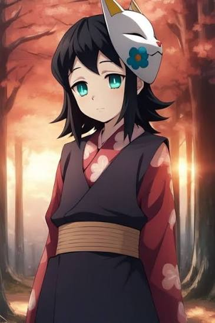